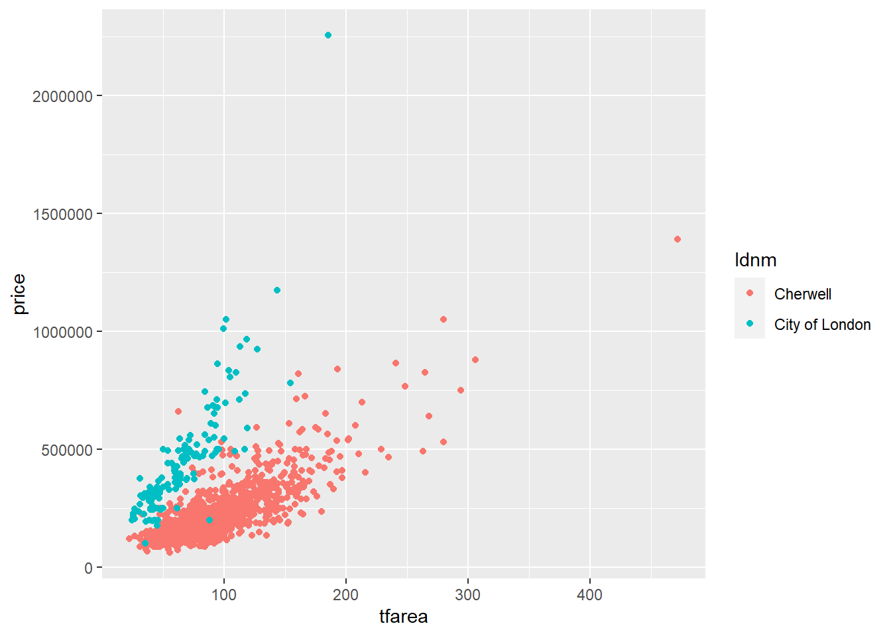

<!DOCTYPE html>
<html lang="" xml:lang="">
<head>

  <meta charset="utf-8" />
  <meta http-equiv="X-UA-Compatible" content="IE=edge" />
  <title>5 Graphics with ggplot2 | Customizing ggplot2 plots in R for scientific research</title>
  <meta name="description" content="5 Graphics with ggplot2 | Customizing ggplot2 plots in R for scientific research" />
  <meta name="generator" content="bookdown 0.21.4 and GitBook 2.6.7" />

  <meta property="og:title" content="5 Graphics with ggplot2 | Customizing ggplot2 plots in R for scientific research" />
  <meta property="og:type" content="book" />
  
  
  
  

  <meta name="twitter:card" content="summary" />
  <meta name="twitter:title" content="5 Graphics with ggplot2 | Customizing ggplot2 plots in R for scientific research" />
  
  
  

<meta name="author" content="Bin Chi" />


  <meta name="viewport" content="width=device-width, initial-scale=1" />
  <meta name="apple-mobile-web-app-capable" content="yes" />
  <meta name="apple-mobile-web-app-status-bar-style" content="black" />
  
  
<link rel="prev" href="getting-started.html"/>
<link rel="next" href="challenge.html"/>
<script src="libs/jquery-2.2.3/jquery.min.js"></script>
<link href="libs/gitbook-2.6.7/css/style.css" rel="stylesheet" />
<link href="libs/gitbook-2.6.7/css/plugin-table.css" rel="stylesheet" />
<link href="libs/gitbook-2.6.7/css/plugin-bookdown.css" rel="stylesheet" />
<link href="libs/gitbook-2.6.7/css/plugin-highlight.css" rel="stylesheet" />
<link href="libs/gitbook-2.6.7/css/plugin-search.css" rel="stylesheet" />
<link href="libs/gitbook-2.6.7/css/plugin-fontsettings.css" rel="stylesheet" />
<link href="libs/gitbook-2.6.7/css/plugin-clipboard.css" rel="stylesheet" />


<script src="libs/accessible-code-block-0.0.1/empty-anchor.js"></script>
<link href="libs/anchor-sections-1.0.1/anchor-sections.css" rel="stylesheet" />
<script src="libs/anchor-sections-1.0.1/anchor-sections.js"></script>


<style type="text/css">
code.sourceCode > span { display: inline-block; line-height: 1.25; }
code.sourceCode > span { color: inherit; text-decoration: inherit; }
code.sourceCode > span:empty { height: 1.2em; }
.sourceCode { overflow: visible; }
code.sourceCode { white-space: pre; position: relative; }
pre.sourceCode { margin: 0; }
@media screen {
div.sourceCode { overflow: auto; }
}
@media print {
code.sourceCode { white-space: pre-wrap; }
code.sourceCode > span { text-indent: -5em; padding-left: 5em; }
}
pre.numberSource code
  { counter-reset: source-line 0; }
pre.numberSource code > span
  { position: relative; left: -4em; counter-increment: source-line; }
pre.numberSource code > span > a:first-child::before
  { content: counter(source-line);
    position: relative; left: -1em; text-align: right; vertical-align: baseline;
    border: none; display: inline-block;
    -webkit-touch-callout: none; -webkit-user-select: none;
    -khtml-user-select: none; -moz-user-select: none;
    -ms-user-select: none; user-select: none;
    padding: 0 4px; width: 4em;
    color: #aaaaaa;
  }
pre.numberSource { margin-left: 3em; border-left: 1px solid #aaaaaa;  padding-left: 4px; }
div.sourceCode
  {   }
@media screen {
code.sourceCode > span > a:first-child::before { text-decoration: underline; }
}
code span.al { color: #ff0000; font-weight: bold; } /* Alert */
code span.an { color: #60a0b0; font-weight: bold; font-style: italic; } /* Annotation */
code span.at { color: #7d9029; } /* Attribute */
code span.bn { color: #40a070; } /* BaseN */
code span.bu { } /* BuiltIn */
code span.cf { color: #007020; font-weight: bold; } /* ControlFlow */
code span.ch { color: #4070a0; } /* Char */
code span.cn { color: #880000; } /* Constant */
code span.co { color: #60a0b0; font-style: italic; } /* Comment */
code span.cv { color: #60a0b0; font-weight: bold; font-style: italic; } /* CommentVar */
code span.do { color: #ba2121; font-style: italic; } /* Documentation */
code span.dt { color: #902000; } /* DataType */
code span.dv { color: #40a070; } /* DecVal */
code span.er { color: #ff0000; font-weight: bold; } /* Error */
code span.ex { } /* Extension */
code span.fl { color: #40a070; } /* Float */
code span.fu { color: #06287e; } /* Function */
code span.im { } /* Import */
code span.in { color: #60a0b0; font-weight: bold; font-style: italic; } /* Information */
code span.kw { color: #007020; font-weight: bold; } /* Keyword */
code span.op { color: #666666; } /* Operator */
code span.ot { color: #007020; } /* Other */
code span.pp { color: #bc7a00; } /* Preprocessor */
code span.sc { color: #4070a0; } /* SpecialChar */
code span.ss { color: #bb6688; } /* SpecialString */
code span.st { color: #4070a0; } /* String */
code span.va { color: #19177c; } /* Variable */
code span.vs { color: #4070a0; } /* VerbatimString */
code span.wa { color: #60a0b0; font-weight: bold; font-style: italic; } /* Warning */
</style>

<link rel="stylesheet" href="style.css" type="text/css" />
</head>

<body>


  <div class="book without-animation with-summary font-size-2 font-family-1" data-basepath=".">

    <div class="book-summary">
      <nav role="navigation">

<ul class="summary">
<li><a href="./">CASA0005 seminar 2</a></li>

<li class="divider"></li>
<li><a href="index.html#section"></a></li>
<li class="chapter" data-level="1" data-path="introduction.html"><a href="introduction.html"><i class="fa fa-check"></i><b>1</b> Introduction</a></li>
<li class="chapter" data-level="2" data-path="recommend-resources.html"><a href="recommend-resources.html"><i class="fa fa-check"></i><b>2</b> Recommend resources</a><ul>
<li class="chapter" data-level="2.1" data-path="recommend-resources.html"><a href="recommend-resources.html#resouces-about-ggplot2-packge"><i class="fa fa-check"></i><b>2.1</b> Resouces about ggplot2 packge</a></li>
<li class="chapter" data-level="2.2" data-path="recommend-resources.html"><a href="recommend-resources.html#resouces-about-graphs-or-data-visualization-in-academic-research"><i class="fa fa-check"></i><b>2.2</b> Resouces about graphs or data visualization in academic research</a></li>
<li class="chapter" data-level="2.3" data-path="recommend-resources.html"><a href="recommend-resources.html#how-to-find-more-useful-resources"><i class="fa fa-check"></i><b>2.3</b> How to find more useful resources</a></li>
</ul></li>
<li class="chapter" data-level="3" data-path="recap.html"><a href="recap.html"><i class="fa fa-check"></i><b>3</b> Recap</a><ul>
<li class="chapter" data-level="3.1" data-path="recap.html"><a href="recap.html#basic-requirment-of-a-graph"><i class="fa fa-check"></i><b>3.1</b> Basic requirment of a graph</a><ul>
<li class="chapter" data-level="3.1.1" data-path="recap.html"><a href="recap.html#basic-requirment-of-graphs-in-academic-wriring"><i class="fa fa-check"></i><b>3.1.1</b> Basic requirment of graphs in academic wriring</a></li>
</ul></li>
</ul></li>
<li class="chapter" data-level="4" data-path="getting-started.html"><a href="getting-started.html"><i class="fa fa-check"></i><b>4</b> Getting started</a><ul>
<li class="chapter" data-level="4.1" data-path="getting-started.html"><a href="getting-started.html#loading-ggplot2-package"><i class="fa fa-check"></i><b>4.1</b> Loading ggplot2 package</a></li>
<li class="chapter" data-level="4.2" data-path="getting-started.html"><a href="getting-started.html#dataset"><i class="fa fa-check"></i><b>4.2</b> Dataset</a></li>
</ul></li>
<li class="chapter" data-level="5" data-path="graphics-with-ggplot2.html"><a href="graphics-with-ggplot2.html"><i class="fa fa-check"></i><b>5</b> Graphics with ggplot2</a><ul>
<li class="chapter" data-level="5.1" data-path="graphics-with-ggplot2.html"><a href="graphics-with-ggplot2.html#basic-knowledge-of-ggplot2"><i class="fa fa-check"></i><b>5.1</b> Basic knowledge of ggplot2</a><ul>
<li class="chapter" data-level="5.1.1" data-path="graphics-with-ggplot2.html"><a href="graphics-with-ggplot2.html#basic-components-of-a-ggplot2-plot"><i class="fa fa-check"></i><b>5.1.1</b> Basic Components of a ggplot2 Plot</a></li>
<li class="chapter" data-level="5.1.2" data-path="graphics-with-ggplot2.html"><a href="graphics-with-ggplot2.html#building-a-simple-ggplot-plot"><i class="fa fa-check"></i><b>5.1.2</b> Building a simple ggplot plot</a></li>
<li class="chapter" data-level="5.1.3" data-path="graphics-with-ggplot2.html"><a href="graphics-with-ggplot2.html#section-2"><i class="fa fa-check"></i><b>5.1.3</b> </a></li>
<li class="chapter" data-level="5.1.4" data-path="graphics-with-ggplot2.html"><a href="graphics-with-ggplot2.html#extensions-to-ggplot2"><i class="fa fa-check"></i><b>5.1.4</b> Extensions to ggplot2</a></li>
<li class="chapter" data-level="5.1.5" data-path="graphics-with-ggplot2.html"><a href="graphics-with-ggplot2.html#section-6"><i class="fa fa-check"></i><b>5.1.5</b> </a></li>
</ul></li>
<li class="chapter" data-level="5.2" data-path="graphics-with-ggplot2.html"><a href="graphics-with-ggplot2.html#sub-and-superscript"><i class="fa fa-check"></i><b>5.2</b> Sub and superscript</a></li>
<li class="chapter" data-level="5.3" data-path="graphics-with-ggplot2.html"><a href="graphics-with-ggplot2.html#saving-graphs"><i class="fa fa-check"></i><b>5.3</b> Saving graphs</a></li>
<li class="chapter" data-level="5.4" data-path="graphics-with-ggplot2.html"><a href="graphics-with-ggplot2.html#sum-up"><i class="fa fa-check"></i><b>5.4</b> Sum up</a></li>
</ul></li>
<li class="chapter" data-level="6" data-path="challenge.html"><a href="challenge.html"><i class="fa fa-check"></i><b>6</b> Challenge</a></li>
<li class="chapter" data-level="7" data-path="answer.html"><a href="answer.html"><i class="fa fa-check"></i><b>7</b> Answer</a></li>
<li class="chapter" data-level="8" data-path="q-a.html"><a href="q-a.html"><i class="fa fa-check"></i><b>8</b> Q &amp; A</a></li>
<li class="divider"></li>
<li><a href="https://github.com/rstudio/bookdown" target="blank">Published with bookdown</a></li>
</ul>

      </nav>
    </div>

    <div class="book-body">
      <div class="body-inner">
        <div class="book-header" role="navigation">
          <h1>
            <i class="fa fa-circle-o-notch fa-spin"></i><a href="./">Customizing ggplot2 plots in R for scientific research</a>
          </h1>
        </div>

        <div class="page-wrapper" tabindex="-1" role="main">
          <div class="page-inner">

            <section class="normal" id="section-">
<div id="graphics-with-ggplot2" class="section level1">
<h1><span class="header-section-number">5</span> Graphics with ggplot2</h1>
<div id="basic-knowledge-of-ggplot2" class="section level2">
<h2><span class="header-section-number">5.1</span> Basic knowledge of ggplot2</h2>
<p>There are two ways to produce plots in ggplot2, one is <code>qplot()</code> and the other is <code>ggplot()</code>. In this seminar we focus on <code>ggplot</code>.</p>
<div id="basic-components-of-a-ggplot2-plot" class="section level3">
<h3><span class="header-section-number">5.1.1</span> Basic Components of a ggplot2 Plot</h3>
<p><a href="https://rstudio.com/wp-content/uploads/2015/03/ggplot2-cheatsheet.pdf">Data Visualization with ggplot2 Cheat Sheet - RStudio</a></p>
</div>
<div id="building-a-simple-ggplot-plot" class="section level3">
<h3><span class="header-section-number">5.1.2</span> Building a simple ggplot plot</h3>
<p>Now let us start with creating a scatter plot using ggplot().The scatter plot is created to exploring the relationship between transaction price and total floor area in two different local authorities.<br />
#### step 1 plot background</p>
<div class="sourceCode" id="cb4"><pre class="sourceCode r"><code class="sourceCode r"><span id="cb4-1"><a href="graphics-with-ggplot2.html#cb4-1"></a><span class="kw">ggplot</span>(housedata1,<span class="kw">aes</span>(<span class="dt">x=</span>tfarea,<span class="dt">y=</span>price))</span></code></pre></div>
<p>
#### step 2 add a layer</p>
<div class="sourceCode" id="cb5"><pre class="sourceCode r"><code class="sourceCode r"><span id="cb5-1"><a href="graphics-with-ggplot2.html#cb5-1"></a><span class="kw">ggplot</span>(housedata1,<span class="kw">aes</span>(<span class="dt">x=</span>tfarea,<span class="dt">y=</span>price))<span class="op">+</span></span>
<span id="cb5-2"><a href="graphics-with-ggplot2.html#cb5-2"></a><span class="st">  </span><span class="kw">geom_point</span>()</span></code></pre></div>
<p></p>
<div id="step-3-add-the-thid-layerlinear-regression-line" class="section level4">
<h4><span class="header-section-number">5.1.2.1</span> step 3 add the thid layer(linear regression line)</h4>
<div class="sourceCode" id="cb6"><pre class="sourceCode r"><code class="sourceCode r"><span id="cb6-1"><a href="graphics-with-ggplot2.html#cb6-1"></a><span class="kw">ggplot</span>(housedata1,<span class="kw">aes</span>(<span class="dt">x=</span>tfarea,<span class="dt">y=</span>price))<span class="op">+</span></span>
<span id="cb6-2"><a href="graphics-with-ggplot2.html#cb6-2"></a><span class="st">  </span><span class="kw">geom_point</span>()<span class="op">+</span></span>
<span id="cb6-3"><a href="graphics-with-ggplot2.html#cb6-3"></a><span class="st">  </span><span class="kw">geom_smooth</span>(<span class="dt">method=</span><span class="st">&quot;lm&quot;</span>)</span></code></pre></div>
<pre><code>## `geom_smooth()` using formula &#39;y ~ x&#39;</code></pre>
<p></p>
</div>
<div id="step-4-add-anoher-layer" class="section level4">
<h4><span class="header-section-number">5.1.2.2</span> step 4 add anoher layer</h4>
<div class="sourceCode" id="cb8"><pre class="sourceCode r"><code class="sourceCode r"><span id="cb8-1"><a href="graphics-with-ggplot2.html#cb8-1"></a><span class="kw">ggplot</span>(housedata1,<span class="kw">aes</span>(<span class="dt">x=</span>tfarea,<span class="dt">y=</span>price))<span class="op">+</span></span>
<span id="cb8-2"><a href="graphics-with-ggplot2.html#cb8-2"></a><span class="st">  </span><span class="kw">geom_point</span>()<span class="op">+</span></span>
<span id="cb8-3"><a href="graphics-with-ggplot2.html#cb8-3"></a><span class="st">  </span><span class="kw">geom_smooth</span>(<span class="dt">method=</span><span class="st">&quot;lm&quot;</span>)<span class="op">+</span></span>
<span id="cb8-4"><a href="graphics-with-ggplot2.html#cb8-4"></a><span class="st">  </span><span class="kw">facet_wrap</span>(<span class="op">~</span>ldnm)</span></code></pre></div>
<pre><code>## `geom_smooth()` using formula &#39;y ~ x&#39;</code></pre>
<p>
#### step 4 add a linear regression line</p>
</div>
<div id="section-1" class="section level4">
<h4><span class="header-section-number">5.1.2.3</span> </h4>
</div>
</div>
<div id="section-2" class="section level3">
<h3><span class="header-section-number">5.1.3</span> </h3>
<div id="section-3" class="section level4">
<h4><span class="header-section-number">5.1.3.1</span> </h4>
</div>
<div id="section-4" class="section level4">
<h4><span class="header-section-number">5.1.3.2</span> </h4>
</div>
<div id="section-5" class="section level4">
<h4><span class="header-section-number">5.1.3.3</span> </h4>
</div>
</div>
<div id="extensions-to-ggplot2" class="section level3">
<h3><span class="header-section-number">5.1.4</span> Extensions to ggplot2</h3>
<p>ggthemes – more diagram themes, allows you to make graphics appear as if produced by Stata,
Excel, The Economist, etc.
ggformula – an interface similar to lattice
ggpmisc – support for time series and polynomial ts
ggtern – ternary diagrams for compositional data
ggforce – various “geom” layers, including pie charts, and other extensions
ggExtra – add marginal plots etc
GGally – special purpose plots, coecient plots, model diagnostics, networks, correlation matrices
plotly has the function ggplotly to translate “ggplot” results into JavaScript diagrams suitable for
websites.</p>
<p>Since ggplot only works with <strong>data</strong> frames,</p>
<div class="sourceCode" id="cb10"><pre class="sourceCode r"><code class="sourceCode r"><span id="cb10-1"><a href="graphics-with-ggplot2.html#cb10-1"></a><span class="co">#test the data set is a data frame</span></span>
<span id="cb10-2"><a href="graphics-with-ggplot2.html#cb10-2"></a><span class="kw">is.data.frame</span>(housedata1)</span></code></pre></div>
<pre><code>## [1] TRUE</code></pre>
<div class="sourceCode" id="cb12"><pre class="sourceCode r"><code class="sourceCode r"><span id="cb12-1"><a href="graphics-with-ggplot2.html#cb12-1"></a><span class="kw">is.data.frame</span>(housedata2)</span></code></pre></div>
<pre><code>## [1] TRUE</code></pre>
</div>
<div id="section-6" class="section level3">
<h3><span class="header-section-number">5.1.5</span> </h3>
<div id="section-7" class="section level4">
<h4><span class="header-section-number">5.1.5.1</span> </h4>
<p>Here is a review of existing methods.</p>
</div>
</div>
</div>
<div id="sub-and-superscript" class="section level2">
<h2><span class="header-section-number">5.2</span> Sub and superscript</h2>
</div>
<div id="saving-graphs" class="section level2">
<h2><span class="header-section-number">5.3</span> Saving graphs</h2>
<p>TIFF files exported directly from RStudio will only achieve a resolution of 72dpi.</p>
<p>In RStudio, you can click on the “Export” button and export your plots</p>
<p>Using ggsave is used to save a ggplot2 graph from the screen to a file</p>
<div class="sourceCode" id="cb14"><pre class="sourceCode r"><code class="sourceCode r"><span id="cb14-1"><a href="graphics-with-ggplot2.html#cb14-1"></a><span class="kw">ggsave</span>(<span class="st">&quot;Figure_B.tiff&quot;</span>,<span class="dt">units=</span><span class="st">&quot;in&quot;</span>, <span class="dt">width=</span><span class="dv">14</span>, <span class="dt">height=</span><span class="dv">6</span>, <span class="dt">dpi=</span><span class="dv">500</span>, <span class="dt">compression =</span> <span class="st">&#39;lzw&#39;</span>)  </span></code></pre></div>
<pre><code>## `geom_smooth()` using formula &#39;y ~ x&#39;</code></pre>
</div>
<div id="sum-up" class="section level2">
<h2><span class="header-section-number">5.4</span> Sum up</h2>

</div>
</div>
            </section>

          </div>
        </div>
      </div>
<a href="getting-started.html" class="navigation navigation-prev " aria-label="Previous page"><i class="fa fa-angle-left"></i></a>
<a href="challenge.html" class="navigation navigation-next " aria-label="Next page"><i class="fa fa-angle-right"></i></a>
    </div>
  </div>
<script src="libs/gitbook-2.6.7/js/app.min.js"></script>
<script src="libs/gitbook-2.6.7/js/lunr.js"></script>
<script src="libs/gitbook-2.6.7/js/clipboard.min.js"></script>
<script src="libs/gitbook-2.6.7/js/plugin-search.js"></script>
<script src="libs/gitbook-2.6.7/js/plugin-sharing.js"></script>
<script src="libs/gitbook-2.6.7/js/plugin-fontsettings.js"></script>
<script src="libs/gitbook-2.6.7/js/plugin-bookdown.js"></script>
<script src="libs/gitbook-2.6.7/js/jquery.highlight.js"></script>
<script src="libs/gitbook-2.6.7/js/plugin-clipboard.js"></script>
<script>
gitbook.require(["gitbook"], function(gitbook) {
gitbook.start({
"sharing": {
"github": false,
"facebook": true,
"twitter": true,
"linkedin": false,
"weibo": false,
"instapaper": false,
"vk": false,
"all": ["facebook", "twitter", "linkedin", "weibo", "instapaper"]
},
"fontsettings": {
"theme": "white",
"family": "sans",
"size": 2
},
"edit": {
"link": "https://github.com/BINCHI1990/CASA_seminar2/edit/master/06-Core.Rmd",
"text": "Edit"
},
"history": {
"link": null,
"text": null
},
"view": {
"link": "https://github.com/BINCHI1990/CASA_seminar2/blob/master/06-Core.Rmd",
"text": null
},
"download": null,
"toc": {
"collapse": "subsection"
}
});
});
</script>

</body>

</html>
